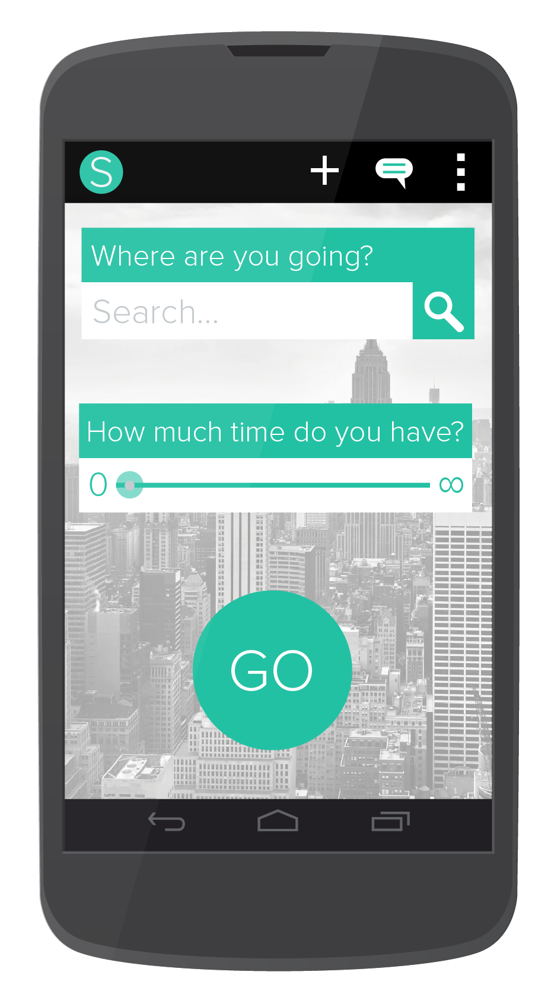
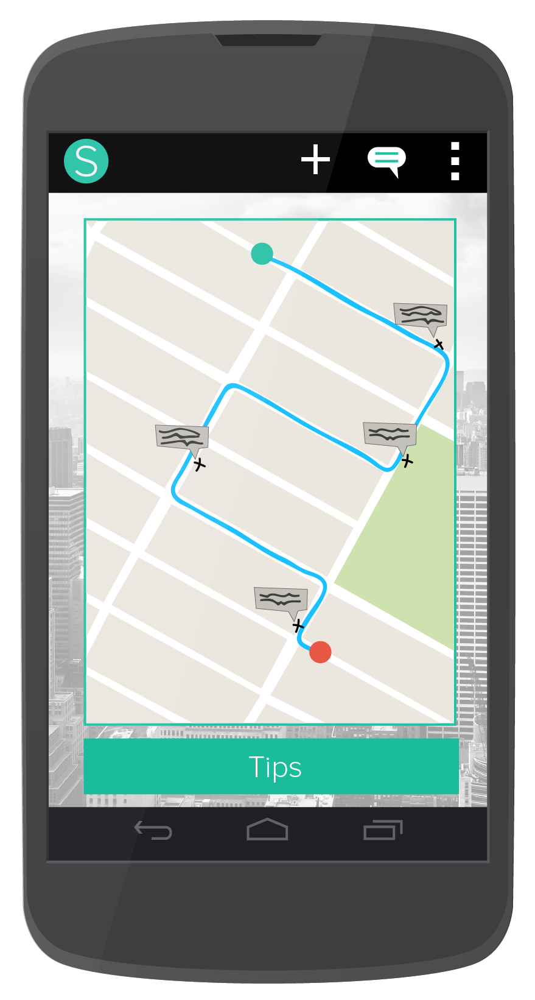
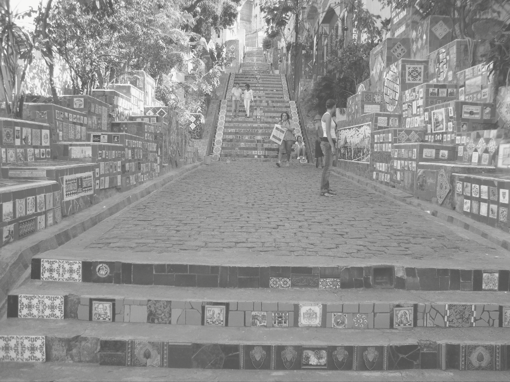

SERENDICITY
What is serendipity? Something that is lacking when we travel, now more than ever. The Internet's wealth of information leads to rigid schedules and itineraries. Traveling should be about serendipitous encounters with places and strangers, not checklists.
What is it?
Serendicity seeks to bring serendipity back into travel by encouraging exploration and discovery of city neighborhoods. It's a mobile app that provides the most interesting walking route to your destination, rather than the fastest one.

How does it work?
Serendicity leverages APIs from Foursquare and Google Maps. The app harnesses the Internet's wealth of information to create personalized walking routes in three simple steps: find your destination, pick a category of stops, and indicate how much time you have.
What's next?
Serendicity will continue to evolve. New features are in development, to allow for a more robust experience. If you'd like to contribute or just chat, drop me a line: jorge.brake@gmail.com.

Try it out!
Visit http://bit.ly/serendicity in your mobile browser, and explore!